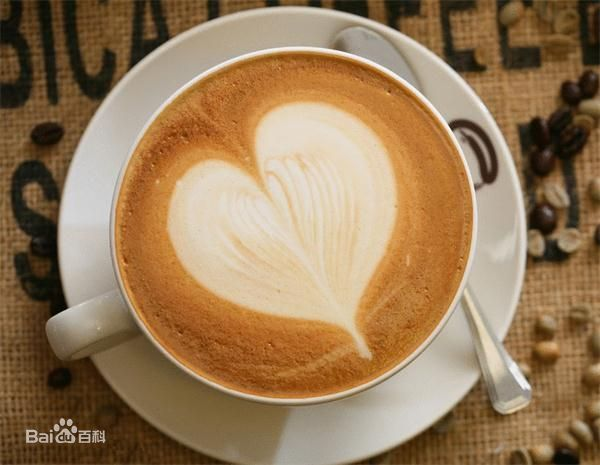
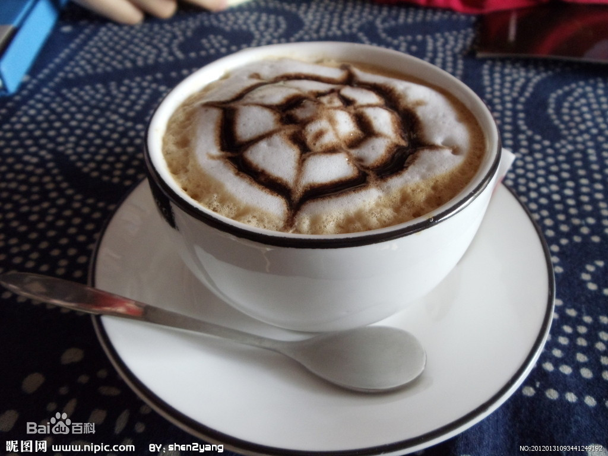
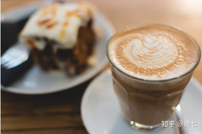

| 咖啡 |
价格 |
| 拿铁 |
￥24 |
| 卡布奇诺 |
￥22 |
| 澳瑞白 |
￥23 |
拿铁
“拿铁”不是咖啡其实，拿铁（Latte）在意大利语里是“牛奶”的意思，如果你点一杯“拿铁”，
那么服务生只会给你上一杯牛奶。而意大利语的Caffè Latte指的才是拿铁。现在很多冷饮店
都会推出自己的“拿铁”系列，像“红茶拿铁”“抹茶拿铁”等等，其实就是奶茶而并没有咖啡的成
分。拿铁咖啡是意大利浓缩咖啡(Espresso)与牛奶的经典混合，意大利人也很喜欢把拿铁作
为早餐的饮料。意大利人早晨的厨房里，照得到阳光的炉子上通常会同时煮着咖啡和牛奶。喝
拿铁的意大利人，与其说他们喜欢意大利浓缩咖啡，不如说他们喜欢牛奶，也只有Espresso才
能给普普通通的牛奶带来让人难以忘怀的味道。
卡布奇诺

20世纪初期，意大利人阿奇布夏发明蒸汽压力咖啡机的同时，也发展出了卡布奇诺咖啡。
卡布奇诺是一种加入以同量的意大利特浓咖啡和蒸汽泡沫牛奶相混合的意大利咖啡。此时咖
啡的颜色，就像卡布奇诺教会的修士在深褐色的外衣上覆上一条头巾一样，咖啡因此得名。传
统的卡布奇诺咖啡是三分之一浓缩咖啡，三分之一蒸汽牛奶和三分之一泡沫牛奶，并在上面撒上
小颗粒的肉桂粉末。
澳瑞白

澳白，平白，馥芮白，醇艺白。是一个东西，英文都是：flat White 源头是新西兰或者澳大利亚。
据说他们在争。咖啡比拿铁多。奶泡薄。拉花。拉花奶泡必然厚不了。浓缩少了油脂少，不容易出花。
咖啡拉花，英文叫latte art。不是拿铁咖啡。是牛奶的艺术。coffee latte 是拿铁。就是咖啡牛
奶。基本就是牛奶的 有的上面会稍微带一点点奶泡。但是基本就是牛奶。卡布要有1/3奶泡，1/3牛奶 。
奶泡在上面。所以喝第一口的时候一定感觉不一样的。卡布上面的花，一般是画的或者拿可可粉撒的 。
直接拿奶缸倒的话很难有那么厚的奶泡。